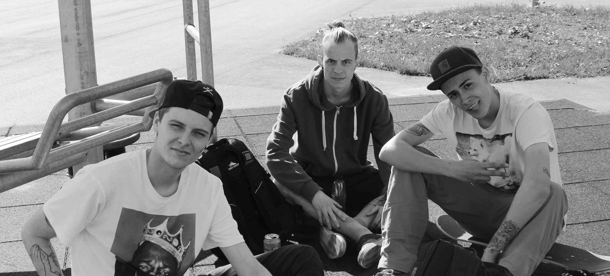

Bekæmp Stigma omkring Skateboarding
 Billede taget af Martin WinklerSelvom at skatere verdenen rundt i flere årtier har været mærket, så er det ikke løgn, når man siger, at skatere danner et fællesskab, hvor de spreder fred og støtte, i stedet for at dømme hinanden for materialistiske ting. Som skater kan du have hvilken som helst hudfarve, du kan komme fra selv de ringeste omgivelser og have lige den tro du vil, uden at nogen dømmer dig for det. Alle kommer kun for 1 ting, nemlig at skate og hygge sig. For mange skatere, er det ikke bare en hobby, det er deres liv og for nogen, er det deres grund til at leve. Man ser tit skatere som stadig prøver at lande et trick klokken 2 om natten, fordi de ikke gider at gå før de lander det. Ignorere fuldstændig al smerte de har påtaget sig. Stigma er onde rygter, som er blevet spredt af dem med et lukket sind og dem, som simpelthen bare ikke forstår. Skatere har været mærket med ord som doven, stofmisbrugere og mange andre. Men man hører aldrig om de meget motiverede, intellektuelle, hårdtarbejdende og passionerede mennesker som den her sport bringer.